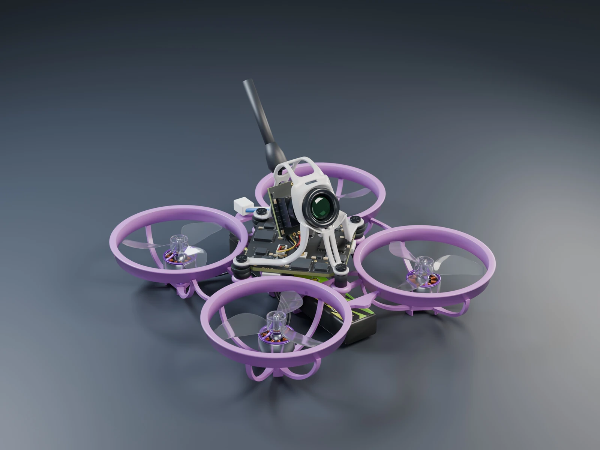

Studio renders
Rendered in Blender from the same Air65 II model. Download the image or play the 10-second motor animation below.

Watch it spin up
The props start still, spin up, then stop. The peak of 60,394 RPM comes from BETAFPV’s bench test for the Racing 0702 30000KV motor with a GF1207 three-blade propeller. The timing was chosen for this clip.
The airframe stays fixed. To adjust the RPM and watch the blades in slow motion, open the 3D Explorer.
Try the RPM slider BETAFPV’s motor test data ↗
Blender files
Download the studio scene, animated Blender project and full-resolution PNG from the release. The code and JSON settings are in the repository.
Some shapes are estimated from photos, and the battery is shown unplugged. The viewer approximates motion blur; the video uses Blender’s motion blur. Neither simulates flight or thrust. Unofficial project. Not affiliated with BETAFPV.